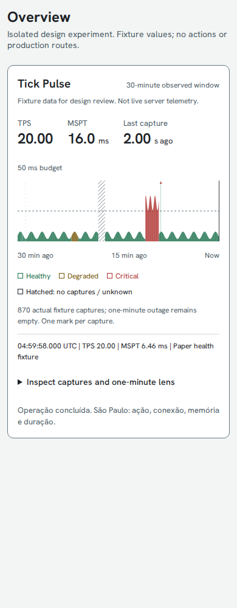
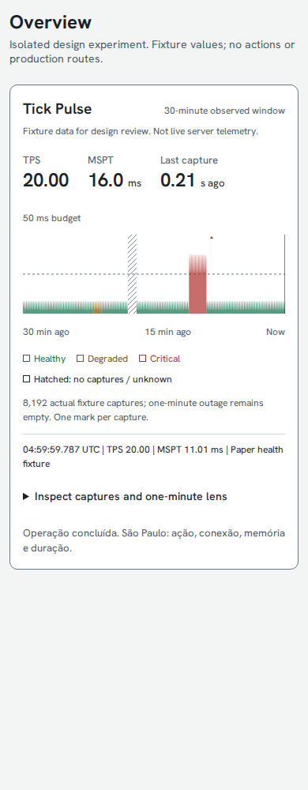
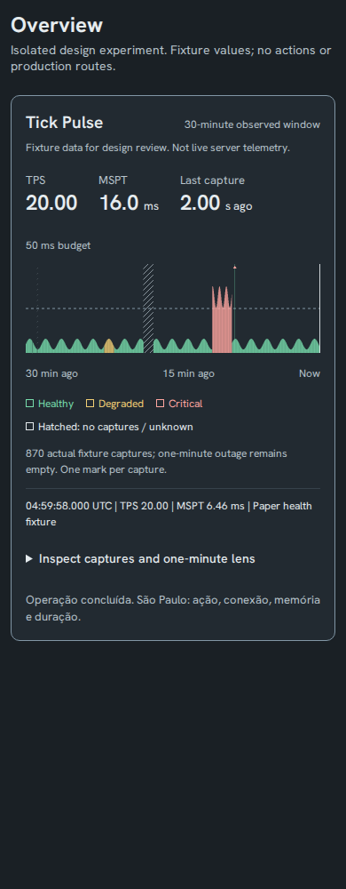
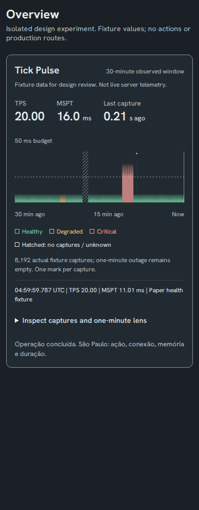
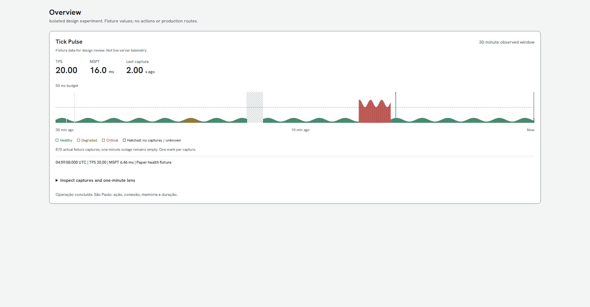
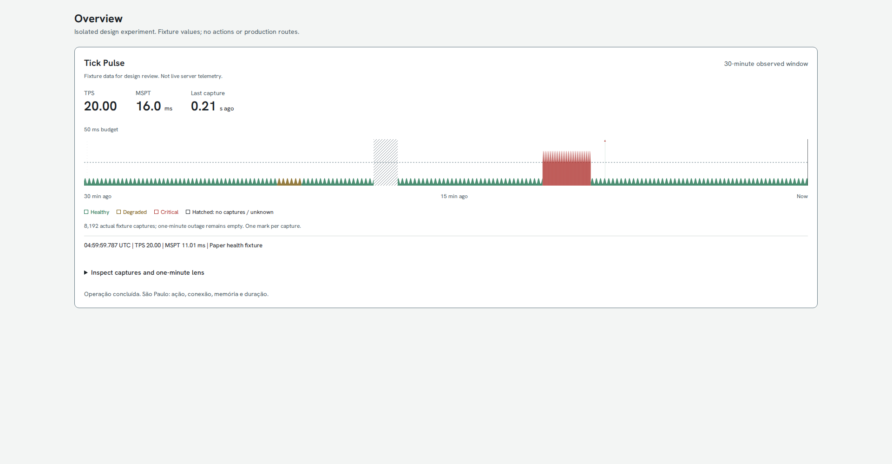
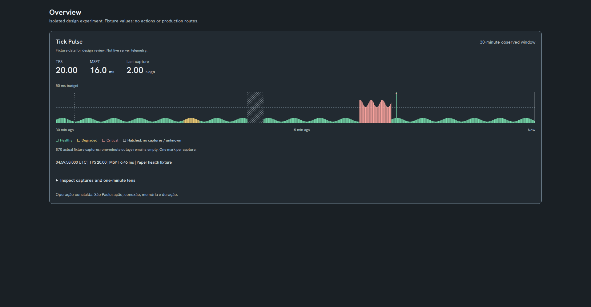
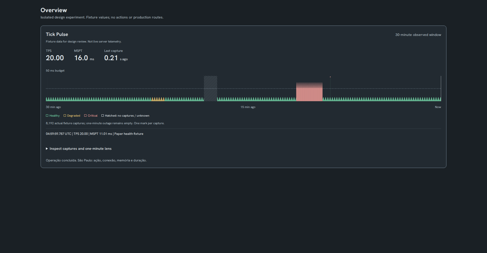
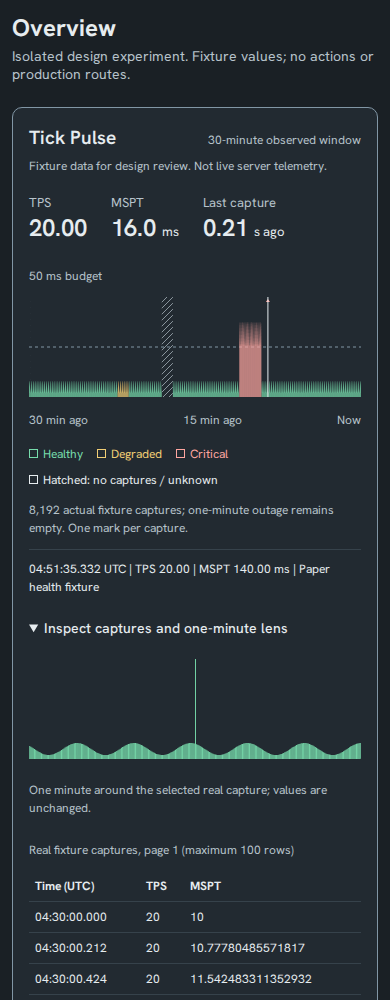
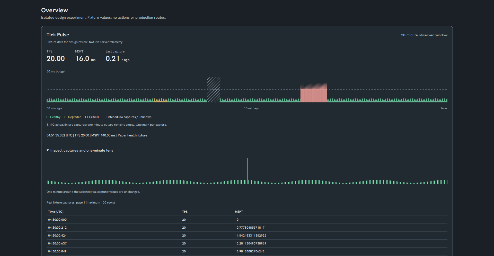

Overview typography and Tick Pulse review
Actual mounted 5.0 Overview header plus an isolated fixture Pulse. Prototype values are not live telemetry. Fonts remain unvendored; screenshots need no installed custom fonts.
Overview at 1280px, light
30-minute Pulse at 390px, light
870 retained captures; two-second cadence and one-minute outage
8,192 retained captures; dense stress case and one-minute outage
30-minute Pulse at 390px, dark
870 retained captures; two-second cadence and one-minute outage
8,192 retained captures; dense stress case and one-minute outage
30-minute Pulse at 1920px, light
870 retained captures; two-second cadence and one-minute outage
8,192 retained captures; dense stress case and one-minute outage
30-minute Pulse at 1920px, dark
870 retained captures; two-second cadence and one-minute outage
8,192 retained captures; dense stress case and one-minute outage
Exact capture inspection at the retention cap
One-minute lens and paged table preserve individual captures. The selected spike is 140 ms; its exact value remains in the readout.
390px, dark
1920px, dark